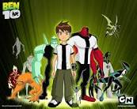

Dilip Kumar R
I love Tom &Jerry.It is my most favourite cartoon show. Tom and Jerry is an American cartoon series about a hapless cat's never-ending pursuit of a clever mouse.
Doremon is a character Ilook up to.Doremon's got a solution to every problem Doraemon: A cat-like robot of the 22nd century. Doraemon came to the present age to help Nobita. Doraemon has a four-dimensional pocket which holds a lot of gadgets.
It is one of my all time favourite cartoons as it is very entertaining Pikachu, a yellow mouselike creature, is the undisputed face of Pokémon and helped the series become a worldwide phenomenon. Pokémon inspired a cartoon series, movies, books, a toy line, sequels, spin-offs, a clothing line, and a popular trading-card game.
It is a super natural show.it is very entertaining.What is the concept of Ben 10. The series is about a 10-year-old boy named Ben Tennyson who gets a watch-style alien device called the "Omnitrix".
